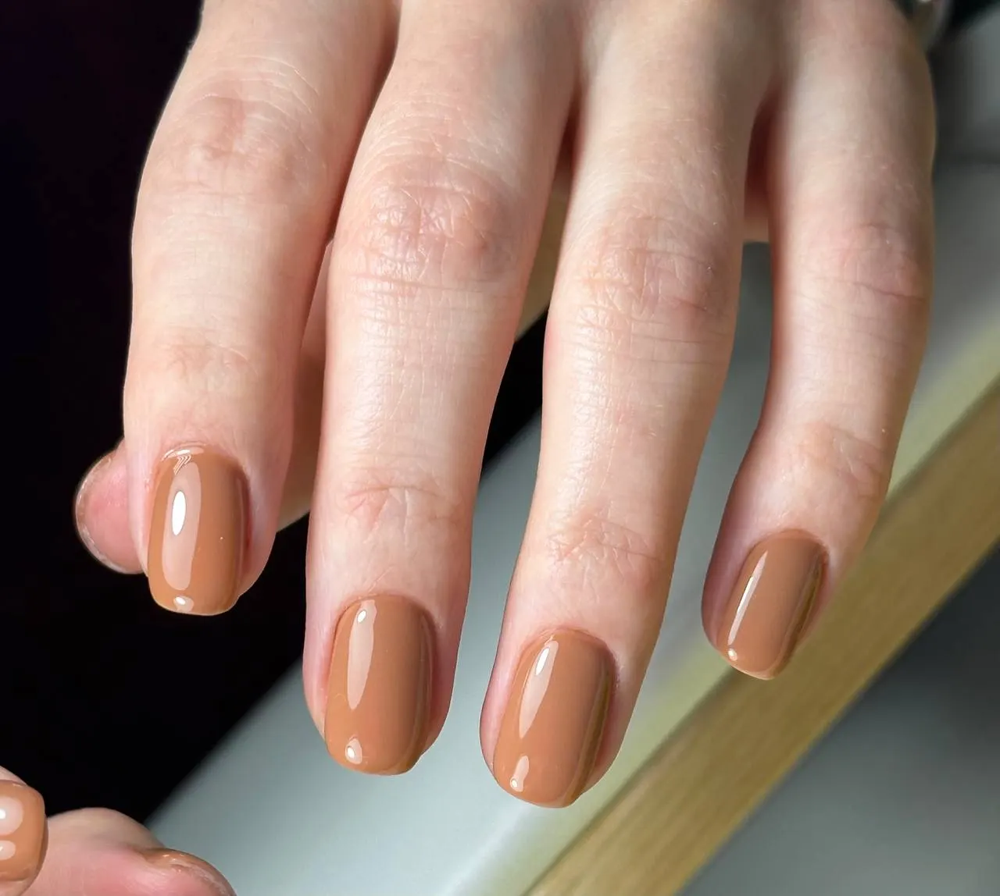
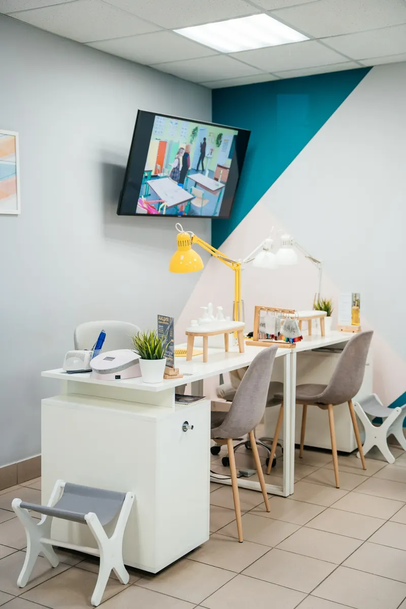
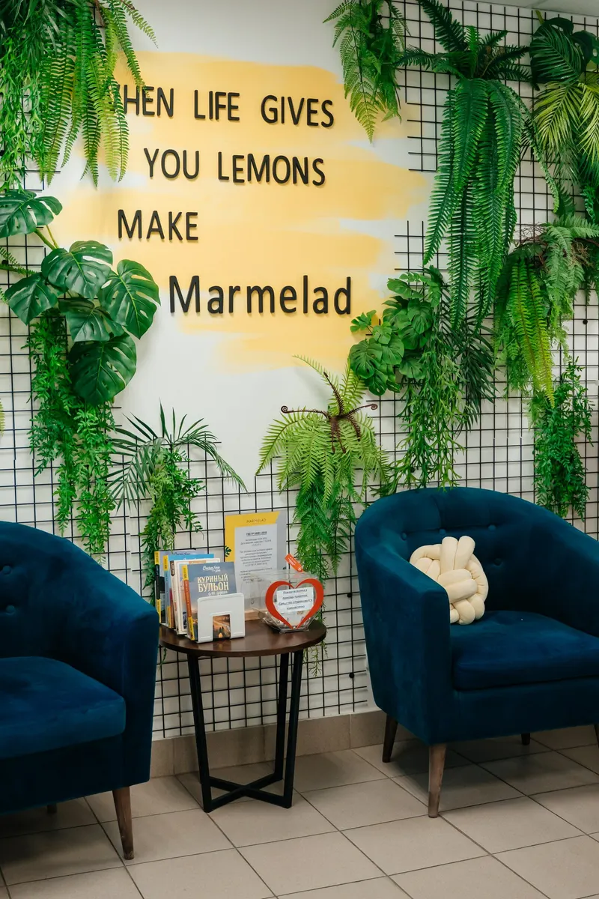
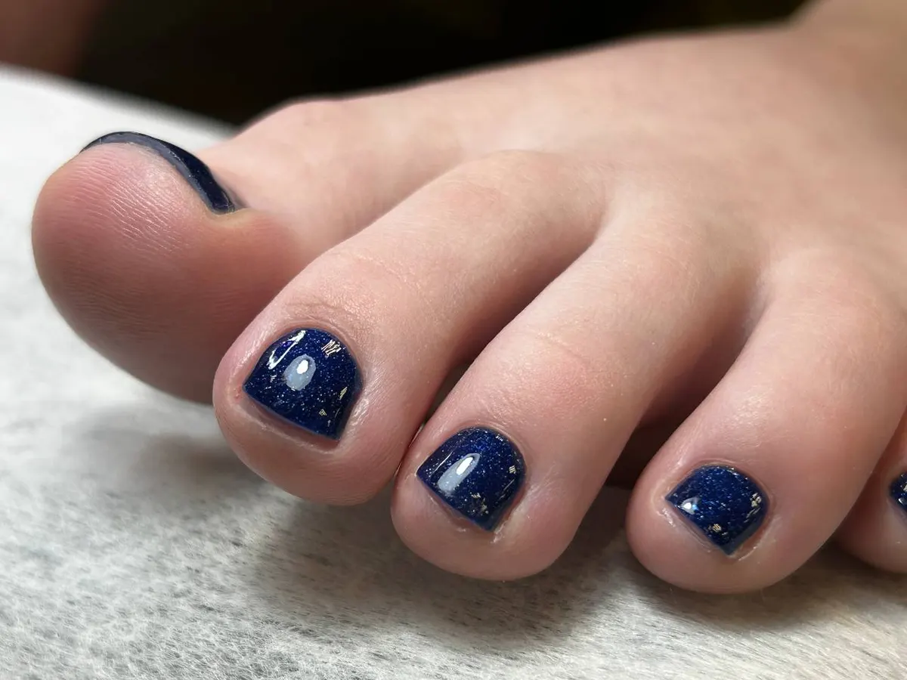

Маникюр и педикюр · Челябинск
Маникюр и педикюр в Челябинске – цена до записи
Прайс с карточки на Яндекс Картах – ниже, на одном экране. Выберите услугу, день и время – сообщение в Telegram студии соберётся само. Ежедневно 9:00–21:00, ул. Доватора, 18.
- Цена названа до записи
- Ежедневно 9:00–21:00
- 5,0 на Яндекс.Картах

Что входит в маникюр с гель-лаком
Входит
- Диагностика состояния ногтей, фото и видео для контроля динамики
- Адаптивный маникюр
- Покрытие гелем в один или несколько оттенков
- SPA-уход за кожей рук: скраб, сыворотка, массажное масло, защитный лосьон
Отдельно, если нужно
- Сложный дизайн, френч и дизайн больше двух ногтей – уточняется при записи
- Коррекция наращивания и восстановление архитектуры – отдельная услуга
- В услугах за 2 150 ₽ дизайн не входит
Цена названа до записи
Все услуги маникюра и педикюра из записи на Яндекс Картах. Где указан диапазон, цену уточните при записи.
Маникюр
- Знакомство с мастером: гигиенический маникюракция, с прозрачным или цветным лаком1 600 ₽
- Знакомство с мастером: маникюр + гель-лакакция, со снятием или без, дизайн не входит2 150 ₽
- Гигиенический маникюр2 050–2 350 ₽, с прозрачным или цветным лакомот 2 050 ₽
- Маникюр + гель-лак2 800–3 150 ₽ со снятием, простой дизайн двух ногтей входитот 2 800 ₽
- Маникюр + бондирование2 300–2 600 ₽, витаминизированное, прозрачное покрытиеот 2 300 ₽
- Коррекция наращивания, архитектурасо снятием старого покрытия3 000 ₽
- Мужской маникюр2 050–2 350 ₽от 2 050 ₽
- Детский маникюр до 14 лет1 800–2 100 ₽от 1 800 ₽
- Сложный дизайн, френчуточняется при записи, дизайн больше двух ногтейот 500 ₽
- Только снятие гель-лака с рукбез маникюра и покрытия1 000 ₽
Педикюр
- Педикюр пальчиков1 700–2 300 ₽, без покрытия или с цветным лакомот 1 700 ₽
- Педикюр пальчиков + гель-лакот 2 300 ₽
- Аппаратный педикюр, пальчики и стопа2 300–2 800 ₽, без покрытия или с лакомот 2 300 ₽
- Аппаратный педикюр + гель-лак2 800–3 400 ₽от 2 800 ₽
- Препаратный педикюр ChaCure4 000–4 500 ₽, без покрытия или с лакомот 4 000 ₽
- Препаратный педикюр ChaCure + гель-лак4 500–5 100 ₽от 4 500 ₽
- Только снятие гель-лака с пальцев ногбез обработки кожи и кутикулы1 000 ₽
Цены взяты с карточки «Мармелад» на Яндекс Картах (запись онлайн), на 14 октября 2026. Время процедур на карточке не указано. Полные противопоказания к покрытию гелем – в описании услуг на Картах.
Как проходит запись
- 01
Выбираете услугу, день и время
Форма записи вверху страницы. Цена в строке – из прайса ниже.
- 02
Сообщение уходит в Telegram студии
Текст собирается сам: услуга, день, время. Можно позвонить: +7 (922) 700-04-51.
- 03
Дизайн и пожелания – при записи
Если нужен дизайн или френч, напишите об этом администратору: цену уточнят заранее.
- 04
На приёме – диагностика ногтей
В маникюре с гель-лаком мастер смотрит состояние ногтей и делает фото и видео для контроля динамики.



Из описаний услуг на Картах
Диагностика ногтей в маникюре с гель-лаком
Фото и видео, чтобы в следующий раз сравнить, как изменилось состояние ногтей.
Одноразовые насадки в аппаратном педикюре
Колпачки и диски – одноразовые, обработка по сухой коже.
Препаратный педикюр без противопоказаний
Подходит при беременности, грудном вскармливании и диабете, по описанию услуги.
SPA-уход за руками в маникюре с покрытием
Скраб, сыворотка или массажный крем, массажное масло и защитный лосьон, по описанию услуг.
Отзывы с Яндекс.Карт
«Отличный сервис, внимательный персонал, вкусные напитки (входят в стоимость), спасибо»
Елена · 29 июня 2025
«Очень уютная студия, всегда вежливые администраторы. Хожу к мастеру Руфине, все очень нравится!Руфина внимательная, делает маникюр и педикюр быстро, аккуратно, красиво, всегда дает рекомендации . Очень рекомендую!»
Анастасия Краева · 21 декабря 2025
«Отличное место! Заботятся о здоровье ногтей! Отличный сервис и классные мастера.»
Мария · 30 декабря 2025
Отзывы с карточки на Яндекс.Картах, без правок.
Частые вопросы
Сколько стоит дизайн?
Простой дизайн двух ногтей входит в маникюр с гель-лаком от 2 800 ₽. В услугах за 2 150 ₽ дизайн не входит. Сложный дизайн, френч и дизайн больше двух ногтей уточняются при записи, от 500 ₽.
Можно ли привести ребёнка?
Да, детский маникюр до 14 лет: 1 800–2 100 ₽, с прозрачным или цветным лаком или со стемпинг-дизайном.
Есть ли противопоказания к покрытию гелем?
Да: грибковые заболевания, острые формы дерматита, ожоги, псориаз, онихолизис, перепиленные и слоящиеся ногти. Полный список – в описании услуги на Яндекс Картах.
Чем можно оплатить?
Наличными, картой, безналичным расчётом, по QR-коду или бесконтактно. На карточке студии отмечена парковка.
Запись онлайн, ежедневно с 9 до 21
- Адрес
- ул. Доватора, 18 (этаж 1), Челябинск
- Часы
- ежедневно 9:00–21:00
- Телефон
- +7 (922) 700-04-51